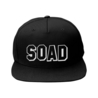

System of a down cap

A new item for the band’s run of shows in the fall of 2018. An SOAD logo is stitched on the outside of the cuff. Get your very own SOAD cap and represent your favourite band.
Size: Fits-all one size. Availiable in color black.